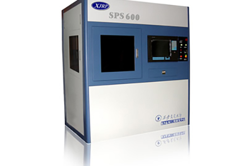
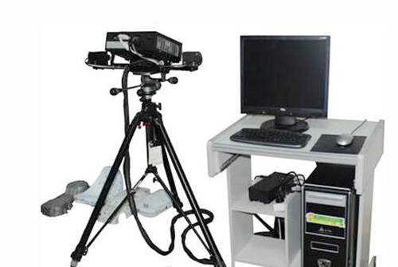
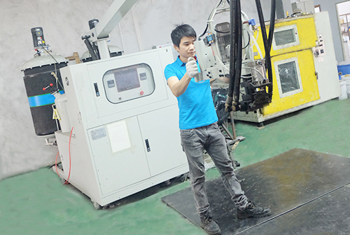
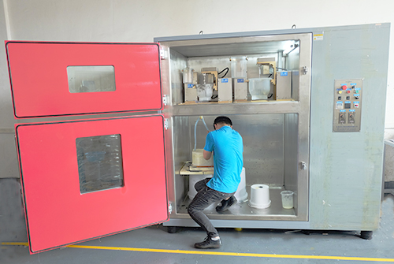

Equipment
Approximately 40 prototype and precision-manufacturing machines: CNC, vacuum casting, 3D printing and 3D scanning.
Primary equipment
Equipment categories and the total count come from the legacy site. Machine makes, models, quantities and travels need confirmation. Verify before publishing
| Equipment | Make / model | Quantity | Travel / specification |
|---|---|---|---|
| CNC machining centers | To be confirmed | To be confirmed | — |
| High-speed engraving machines | To be confirmed | To be confirmed | — |
| Milling machines | To be confirmed | To be confirmed | — |
| SLA machines | To be confirmed | To be confirmed | — |
| Vacuum casting machines | To be confirmed | To be confirmed | — |
| RIM equipment | To be confirmed | To be confirmed | — |
| Laser scanning / 3D scanning | To be confirmed | To be confirmed | — |
| UV curing | To be confirmed | To be confirmed | — |
| 2.5D optical measurement | To be confirmed | To be confirmed | — |
 CNC equipment
CNC equipment
SLA 3D printer
3D scanner
Low-pressure casting equipment
Vacuum casting equipment CNC workshop
CNC workshopPublish the actual models and work envelopes before using this page for capacity assessment.